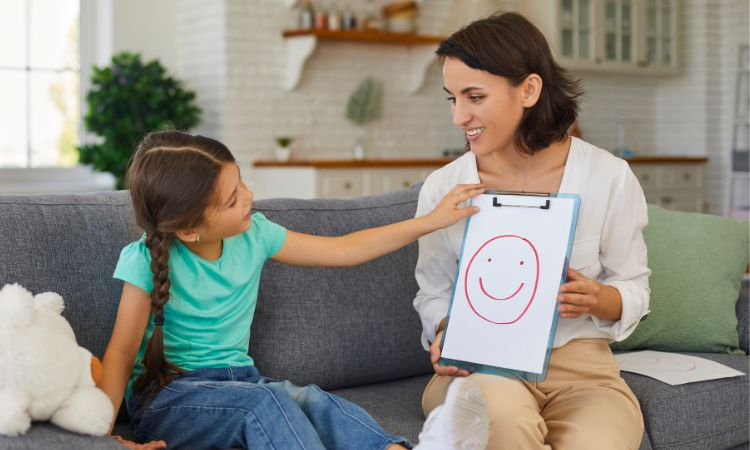

NUESTRA FINALIDAD
Nuevos Lazos es un proyecto impulsado para lograr y cumplir con el objetivo de facilitar la gestión emocional y el bienestar social de niños y niñas en entornos residenciales.
Para ello, la finalidad principal es ofrecer una serie de herramientas y recursos para permitir que la propia persona desarrolle sus actividades básicas vitales de una forma autónoma, empática y eficiente.
HISTORIA
Nuevos Lazos nace a partir de la observación y reflexión sobre la realidad que viven muchos niños y niñas de entre 8 y 12 años que residen en un Centro Residencial de Acción Educativa (CRAE).
Debido a las experiencias personales y familiares que han vivido, algunos presentan dificultades para expresar sus emociones, establecer límites y construir vínculos afectivos sanos basados en el respeto y la comunicación.
Por ello, el proyecto busca diseñar y llevar a cabo actividades educativas adaptadas que fomenten la gestión emocional, la responsabilidad afectiva, la autoestima y la empatía.
Actualmente, trabajamos para ofrecer herramientas que mejoren sus relaciones consigo mismos y con los demás, favoreciendo su bienestar emocional y social en su trayectoria de vida.
